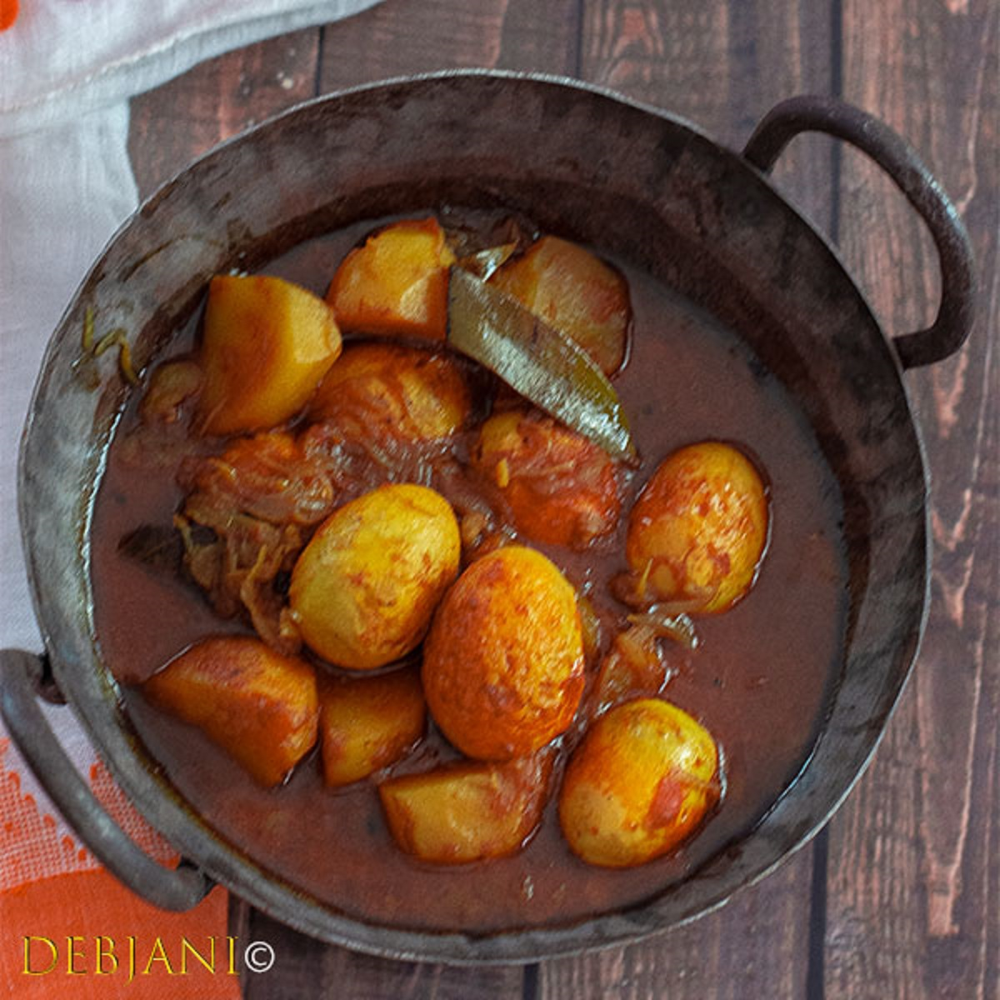

Dimer Dalna

Description
Dimer Dalna is a luscious hearty dish in which the boiled eggs are slightly fried on to give their whites a bit of a crisp after which they are cooked alongside potatoes, tomatoes, onions and other spices and aromatics. It is surved in the form of a thick watery curry and is enjoyed best with rice or roti.
Ingredients
- 6 Dim/ Egg
- 3 Potato
- 2 Onion
- 2 Tomato
- 1 Tbsp. Ginger Paste
- 1 Tbsp. Garlic Paste
- 3 Tbsp. Mustard Oil
- 1 Tbsp. Ghee
- 1 Tsp. Turmeric Powder
- 1 Tsp. Red Chilli Powder
- 1 Tsp. Coriander Powder
- 1 Tsp. Cumin Powder
- 1 Tsp. Bengali Garam Masala Powder
- ½ tsp. Asafoetida
- 1 Tbsp. Sugar
- 1 Tsp. Salt or to taste
- 2 Bay Leaf
- 2 Dry Red Chilli
- 1 Cinnamon Stick
- 3 Green Cardamom
- 3 Clove
Steps
- Take Water in a bowl and bring it to a boil.
- Add ½ tsp. salt to it.
- Add eggs one by one and boil for 8 minutes. This curry calls for hard-boiled eggs.
- Once boiled; switch the flame off and once you can handle remove the skin from the boiled eggs.
- Marinate the eggs with ¼ tsp. each of Turmeric powder, Red Chili powder, Salt, and also sugar.
- Meanwhile, peel the Potato(s) and cut one medium-sized potato into four pieces.
- Marinate the potatoes with ½ tsp. each of Turmeric powder, and also Salt.
- Cut onion into thin slices.
- Heat 3 Tbsp. Oil in a deep bottom pan and fry the potatoes on medium heat till those turn golden brown in color.
- Once fried strain the fried potatoes from the pan.
- Now fry the eggs till they are golden brown from the outside and crisp.
- Strain the eggs from the pan.
- Now temper the remaining oil with bay leaf, dry red chili, cinnamon, green cardamom, and also clove.
- Add Asafoetida and mix.
- Add sugar and wait till the sugar caramelizes.
- Now add chopped onion and cook on medium flame till the onion is properly fried and brownish in color.
- Add the Ginger paste and also garlic paste and mix thoroughly.
- Cook for 2-3 minutes on low flame and add chopped tomatoes.
- Cook till the tomatoes soften.
- Once the mixture is well-mixed and starts leaving oil to add a little salt and 1 Tbsp. water and cook for 2-3 minutes.
- In the meantime, in a bowl take turmeric powder, red chili powder, coriander powder, cumin powder, sugar, salt (if needed), and also ½ of the Bengali Garam Masala.
- Mix it with 1 Tbsp. Mustard oil to make a thick paste.
- Add this mixture to the pan and mix thoroughly.
- Add 2 cups of water and bring it to a boil.
- Now add fried potatoes and keep the flame on the lower side.
- Cook till the potatoes are well-cooked.
- Now add the eggs and cook till the gravy reaches desired consistency.
- Add ghee and the remaining Bengali Garam Masala as well and give it a mix.